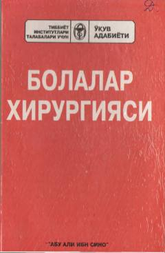

BXBolalar xirurgiyasi bo'yicha tibbiyot oliygohlari talabalari uchun ilk o'zbek tilidagi fundamental darslik.
Ushbu darslik tibbiyot institutlari talabalari va shifokorlar uchun mo'ljallangan bo'lib, bolalar xirurgiyasining asosiy bo'limlarini o'z ichiga oladi. Kitobda bolalar organizmining anatomik-fiziologik xususiyatlari, tugma va orttirilgan xirurgik kasalliklar, ularning diagnostikasi hamda davolash usullari batafsil yoritilgan.